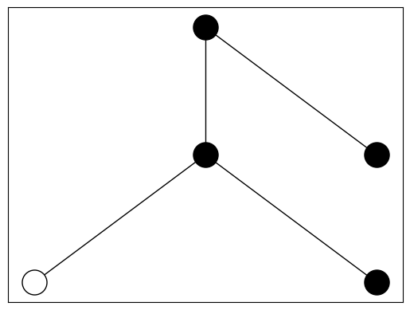

Draw#
Draw your favourite productive number! Navigate to –> Live Code, wait until it says ready and then drag the slider around.
Show code cell source
!pip install networkx matplotlib sympy
! pip install ipywidgets==7.5.1 ipython_genutils
Show code cell output
Requirement already satisfied: networkx in /opt/anaconda3/envs/jbook/lib/python3.13/site-packages (3.4.2)
Requirement already satisfied: matplotlib in /opt/anaconda3/envs/jbook/lib/python3.13/site-packages (3.10.0)
Requirement already satisfied: sympy in /opt/anaconda3/envs/jbook/lib/python3.13/site-packages (1.13.3)
Requirement already satisfied: contourpy>=1.0.1 in /opt/anaconda3/envs/jbook/lib/python3.13/site-packages (from matplotlib) (1.3.1)
Requirement already satisfied: cycler>=0.10 in /opt/anaconda3/envs/jbook/lib/python3.13/site-packages (from matplotlib) (0.12.1)
Requirement already satisfied: fonttools>=4.22.0 in /opt/anaconda3/envs/jbook/lib/python3.13/site-packages (from matplotlib) (4.55.8)
Requirement already satisfied: kiwisolver>=1.3.1 in /opt/anaconda3/envs/jbook/lib/python3.13/site-packages (from matplotlib) (1.4.8)
Requirement already satisfied: numpy>=1.23 in /opt/anaconda3/envs/jbook/lib/python3.13/site-packages (from matplotlib) (2.2.2)
Requirement already satisfied: packaging>=20.0 in /opt/anaconda3/envs/jbook/lib/python3.13/site-packages (from matplotlib) (24.2)
Requirement already satisfied: pillow>=8 in /opt/anaconda3/envs/jbook/lib/python3.13/site-packages (from matplotlib) (11.1.0)
Requirement already satisfied: pyparsing>=2.3.1 in /opt/anaconda3/envs/jbook/lib/python3.13/site-packages (from matplotlib) (3.2.1)
Requirement already satisfied: python-dateutil>=2.7 in /opt/anaconda3/envs/jbook/lib/python3.13/site-packages (from matplotlib) (2.9.0.post0)
Requirement already satisfied: mpmath<1.4,>=1.1.0 in /opt/anaconda3/envs/jbook/lib/python3.13/site-packages (from sympy) (1.3.0)
Requirement already satisfied: six>=1.5 in /opt/anaconda3/envs/jbook/lib/python3.13/site-packages (from python-dateutil>=2.7->matplotlib) (1.17.0)
Requirement already satisfied: ipywidgets==7.5.1 in /opt/anaconda3/envs/jbook/lib/python3.13/site-packages (7.5.1)
Requirement already satisfied: ipython_genutils in /opt/anaconda3/envs/jbook/lib/python3.13/site-packages (0.2.0)
Requirement already satisfied: ipykernel>=4.5.1 in /opt/anaconda3/envs/jbook/lib/python3.13/site-packages (from ipywidgets==7.5.1) (6.29.5)
Requirement already satisfied: traitlets>=4.3.1 in /opt/anaconda3/envs/jbook/lib/python3.13/site-packages (from ipywidgets==7.5.1) (5.14.3)
Requirement already satisfied: nbformat>=4.2.0 in /opt/anaconda3/envs/jbook/lib/python3.13/site-packages (from ipywidgets==7.5.1) (5.10.4)
Requirement already satisfied: widgetsnbextension~=3.5.0 in /opt/anaconda3/envs/jbook/lib/python3.13/site-packages (from ipywidgets==7.5.1) (3.5.2)
Requirement already satisfied: ipython>=4.0.0 in /opt/anaconda3/envs/jbook/lib/python3.13/site-packages (from ipywidgets==7.5.1) (8.32.0)
Requirement already satisfied: appnope in /opt/anaconda3/envs/jbook/lib/python3.13/site-packages (from ipykernel>=4.5.1->ipywidgets==7.5.1) (0.1.4)
Requirement already satisfied: comm>=0.1.1 in /opt/anaconda3/envs/jbook/lib/python3.13/site-packages (from ipykernel>=4.5.1->ipywidgets==7.5.1) (0.2.2)
Requirement already satisfied: debugpy>=1.6.5 in /opt/anaconda3/envs/jbook/lib/python3.13/site-packages (from ipykernel>=4.5.1->ipywidgets==7.5.1) (1.8.12)
Requirement already satisfied: jupyter-client>=6.1.12 in /opt/anaconda3/envs/jbook/lib/python3.13/site-packages (from ipykernel>=4.5.1->ipywidgets==7.5.1) (8.6.3)
Requirement already satisfied: jupyter-core!=5.0.*,>=4.12 in /opt/anaconda3/envs/jbook/lib/python3.13/site-packages (from ipykernel>=4.5.1->ipywidgets==7.5.1) (5.7.2)
Requirement already satisfied: matplotlib-inline>=0.1 in /opt/anaconda3/envs/jbook/lib/python3.13/site-packages (from ipykernel>=4.5.1->ipywidgets==7.5.1) (0.1.7)
Requirement already satisfied: nest-asyncio in /opt/anaconda3/envs/jbook/lib/python3.13/site-packages (from ipykernel>=4.5.1->ipywidgets==7.5.1) (1.6.0)
Requirement already satisfied: packaging in /opt/anaconda3/envs/jbook/lib/python3.13/site-packages (from ipykernel>=4.5.1->ipywidgets==7.5.1) (24.2)
Requirement already satisfied: psutil in /opt/anaconda3/envs/jbook/lib/python3.13/site-packages (from ipykernel>=4.5.1->ipywidgets==7.5.1) (6.1.1)
Requirement already satisfied: pyzmq>=24 in /opt/anaconda3/envs/jbook/lib/python3.13/site-packages (from ipykernel>=4.5.1->ipywidgets==7.5.1) (26.2.1)
Requirement already satisfied: tornado>=6.1 in /opt/anaconda3/envs/jbook/lib/python3.13/site-packages (from ipykernel>=4.5.1->ipywidgets==7.5.1) (6.4.2)
Requirement already satisfied: decorator in /opt/anaconda3/envs/jbook/lib/python3.13/site-packages (from ipython>=4.0.0->ipywidgets==7.5.1) (5.1.1)
Requirement already satisfied: jedi>=0.16 in /opt/anaconda3/envs/jbook/lib/python3.13/site-packages (from ipython>=4.0.0->ipywidgets==7.5.1) (0.19.2)
Requirement already satisfied: pexpect>4.3 in /opt/anaconda3/envs/jbook/lib/python3.13/site-packages (from ipython>=4.0.0->ipywidgets==7.5.1) (4.9.0)
Requirement already satisfied: prompt_toolkit<3.1.0,>=3.0.41 in /opt/anaconda3/envs/jbook/lib/python3.13/site-packages (from ipython>=4.0.0->ipywidgets==7.5.1) (3.0.50)
Requirement already satisfied: pygments>=2.4.0 in /opt/anaconda3/envs/jbook/lib/python3.13/site-packages (from ipython>=4.0.0->ipywidgets==7.5.1) (2.19.1)
Requirement already satisfied: stack_data in /opt/anaconda3/envs/jbook/lib/python3.13/site-packages (from ipython>=4.0.0->ipywidgets==7.5.1) (0.6.3)
Requirement already satisfied: fastjsonschema>=2.15 in /opt/anaconda3/envs/jbook/lib/python3.13/site-packages (from nbformat>=4.2.0->ipywidgets==7.5.1) (2.21.1)
Requirement already satisfied: jsonschema>=2.6 in /opt/anaconda3/envs/jbook/lib/python3.13/site-packages (from nbformat>=4.2.0->ipywidgets==7.5.1) (4.23.0)
Requirement already satisfied: notebook>=4.4.1 in /opt/anaconda3/envs/jbook/lib/python3.13/site-packages (from widgetsnbextension~=3.5.0->ipywidgets==7.5.1) (7.3.2)
Requirement already satisfied: parso<0.9.0,>=0.8.4 in /opt/anaconda3/envs/jbook/lib/python3.13/site-packages (from jedi>=0.16->ipython>=4.0.0->ipywidgets==7.5.1) (0.8.4)
Requirement already satisfied: attrs>=22.2.0 in /opt/anaconda3/envs/jbook/lib/python3.13/site-packages (from jsonschema>=2.6->nbformat>=4.2.0->ipywidgets==7.5.1) (25.1.0)
Requirement already satisfied: jsonschema-specifications>=2023.03.6 in /opt/anaconda3/envs/jbook/lib/python3.13/site-packages (from jsonschema>=2.6->nbformat>=4.2.0->ipywidgets==7.5.1) (2024.10.1)
Requirement already satisfied: referencing>=0.28.4 in /opt/anaconda3/envs/jbook/lib/python3.13/site-packages (from jsonschema>=2.6->nbformat>=4.2.0->ipywidgets==7.5.1) (0.36.2)
Requirement already satisfied: rpds-py>=0.7.1 in /opt/anaconda3/envs/jbook/lib/python3.13/site-packages (from jsonschema>=2.6->nbformat>=4.2.0->ipywidgets==7.5.1) (0.22.3)
Requirement already satisfied: python-dateutil>=2.8.2 in /opt/anaconda3/envs/jbook/lib/python3.13/site-packages (from jupyter-client>=6.1.12->ipykernel>=4.5.1->ipywidgets==7.5.1) (2.9.0.post0)
Requirement already satisfied: platformdirs>=2.5 in /opt/anaconda3/envs/jbook/lib/python3.13/site-packages (from jupyter-core!=5.0.*,>=4.12->ipykernel>=4.5.1->ipywidgets==7.5.1) (4.3.6)
Requirement already satisfied: jupyter-server<3,>=2.4.0 in /opt/anaconda3/envs/jbook/lib/python3.13/site-packages (from notebook>=4.4.1->widgetsnbextension~=3.5.0->ipywidgets==7.5.1) (2.15.0)
Requirement already satisfied: jupyterlab-server<3,>=2.27.1 in /opt/anaconda3/envs/jbook/lib/python3.13/site-packages (from notebook>=4.4.1->widgetsnbextension~=3.5.0->ipywidgets==7.5.1) (2.27.3)
Requirement already satisfied: jupyterlab<4.4,>=4.3.4 in /opt/anaconda3/envs/jbook/lib/python3.13/site-packages (from notebook>=4.4.1->widgetsnbextension~=3.5.0->ipywidgets==7.5.1) (4.3.5)
Requirement already satisfied: notebook-shim<0.3,>=0.2 in /opt/anaconda3/envs/jbook/lib/python3.13/site-packages (from notebook>=4.4.1->widgetsnbextension~=3.5.0->ipywidgets==7.5.1) (0.2.4)
Requirement already satisfied: ptyprocess>=0.5 in /opt/anaconda3/envs/jbook/lib/python3.13/site-packages (from pexpect>4.3->ipython>=4.0.0->ipywidgets==7.5.1) (0.7.0)
Requirement already satisfied: wcwidth in /opt/anaconda3/envs/jbook/lib/python3.13/site-packages (from prompt_toolkit<3.1.0,>=3.0.41->ipython>=4.0.0->ipywidgets==7.5.1) (0.2.13)
Requirement already satisfied: executing>=1.2.0 in /opt/anaconda3/envs/jbook/lib/python3.13/site-packages (from stack_data->ipython>=4.0.0->ipywidgets==7.5.1) (2.1.0)
Requirement already satisfied: asttokens>=2.1.0 in /opt/anaconda3/envs/jbook/lib/python3.13/site-packages (from stack_data->ipython>=4.0.0->ipywidgets==7.5.1) (3.0.0)
Requirement already satisfied: pure_eval in /opt/anaconda3/envs/jbook/lib/python3.13/site-packages (from stack_data->ipython>=4.0.0->ipywidgets==7.5.1) (0.2.3)
Requirement already satisfied: anyio>=3.1.0 in /opt/anaconda3/envs/jbook/lib/python3.13/site-packages (from jupyter-server<3,>=2.4.0->notebook>=4.4.1->widgetsnbextension~=3.5.0->ipywidgets==7.5.1) (4.8.0)
Requirement already satisfied: argon2-cffi>=21.1 in /opt/anaconda3/envs/jbook/lib/python3.13/site-packages (from jupyter-server<3,>=2.4.0->notebook>=4.4.1->widgetsnbextension~=3.5.0->ipywidgets==7.5.1) (23.1.0)
Requirement already satisfied: jinja2>=3.0.3 in /opt/anaconda3/envs/jbook/lib/python3.13/site-packages (from jupyter-server<3,>=2.4.0->notebook>=4.4.1->widgetsnbextension~=3.5.0->ipywidgets==7.5.1) (3.1.5)
Requirement already satisfied: jupyter-events>=0.11.0 in /opt/anaconda3/envs/jbook/lib/python3.13/site-packages (from jupyter-server<3,>=2.4.0->notebook>=4.4.1->widgetsnbextension~=3.5.0->ipywidgets==7.5.1) (0.12.0)
Requirement already satisfied: jupyter-server-terminals>=0.4.4 in /opt/anaconda3/envs/jbook/lib/python3.13/site-packages (from jupyter-server<3,>=2.4.0->notebook>=4.4.1->widgetsnbextension~=3.5.0->ipywidgets==7.5.1) (0.5.3)
Requirement already satisfied: nbconvert>=6.4.4 in /opt/anaconda3/envs/jbook/lib/python3.13/site-packages (from jupyter-server<3,>=2.4.0->notebook>=4.4.1->widgetsnbextension~=3.5.0->ipywidgets==7.5.1) (7.16.6)
Requirement already satisfied: overrides>=5.0 in /opt/anaconda3/envs/jbook/lib/python3.13/site-packages (from jupyter-server<3,>=2.4.0->notebook>=4.4.1->widgetsnbextension~=3.5.0->ipywidgets==7.5.1) (7.7.0)
Requirement already satisfied: prometheus-client>=0.9 in /opt/anaconda3/envs/jbook/lib/python3.13/site-packages (from jupyter-server<3,>=2.4.0->notebook>=4.4.1->widgetsnbextension~=3.5.0->ipywidgets==7.5.1) (0.21.1)
Requirement already satisfied: send2trash>=1.8.2 in /opt/anaconda3/envs/jbook/lib/python3.13/site-packages (from jupyter-server<3,>=2.4.0->notebook>=4.4.1->widgetsnbextension~=3.5.0->ipywidgets==7.5.1) (1.8.3)
Requirement already satisfied: terminado>=0.8.3 in /opt/anaconda3/envs/jbook/lib/python3.13/site-packages (from jupyter-server<3,>=2.4.0->notebook>=4.4.1->widgetsnbextension~=3.5.0->ipywidgets==7.5.1) (0.18.1)
Requirement already satisfied: websocket-client>=1.7 in /opt/anaconda3/envs/jbook/lib/python3.13/site-packages (from jupyter-server<3,>=2.4.0->notebook>=4.4.1->widgetsnbextension~=3.5.0->ipywidgets==7.5.1) (1.8.0)
Requirement already satisfied: async-lru>=1.0.0 in /opt/anaconda3/envs/jbook/lib/python3.13/site-packages (from jupyterlab<4.4,>=4.3.4->notebook>=4.4.1->widgetsnbextension~=3.5.0->ipywidgets==7.5.1) (2.0.4)
Requirement already satisfied: httpx>=0.25.0 in /opt/anaconda3/envs/jbook/lib/python3.13/site-packages (from jupyterlab<4.4,>=4.3.4->notebook>=4.4.1->widgetsnbextension~=3.5.0->ipywidgets==7.5.1) (0.28.1)
Requirement already satisfied: jupyter-lsp>=2.0.0 in /opt/anaconda3/envs/jbook/lib/python3.13/site-packages (from jupyterlab<4.4,>=4.3.4->notebook>=4.4.1->widgetsnbextension~=3.5.0->ipywidgets==7.5.1) (2.2.5)
Requirement already satisfied: setuptools>=40.8.0 in /opt/anaconda3/envs/jbook/lib/python3.13/site-packages (from jupyterlab<4.4,>=4.3.4->notebook>=4.4.1->widgetsnbextension~=3.5.0->ipywidgets==7.5.1) (75.8.0)
Requirement already satisfied: babel>=2.10 in /opt/anaconda3/envs/jbook/lib/python3.13/site-packages (from jupyterlab-server<3,>=2.27.1->notebook>=4.4.1->widgetsnbextension~=3.5.0->ipywidgets==7.5.1) (2.17.0)
Requirement already satisfied: json5>=0.9.0 in /opt/anaconda3/envs/jbook/lib/python3.13/site-packages (from jupyterlab-server<3,>=2.27.1->notebook>=4.4.1->widgetsnbextension~=3.5.0->ipywidgets==7.5.1) (0.10.0)
Requirement already satisfied: requests>=2.31 in /opt/anaconda3/envs/jbook/lib/python3.13/site-packages (from jupyterlab-server<3,>=2.27.1->notebook>=4.4.1->widgetsnbextension~=3.5.0->ipywidgets==7.5.1) (2.32.3)
Requirement already satisfied: six>=1.5 in /opt/anaconda3/envs/jbook/lib/python3.13/site-packages (from python-dateutil>=2.8.2->jupyter-client>=6.1.12->ipykernel>=4.5.1->ipywidgets==7.5.1) (1.17.0)
Requirement already satisfied: idna>=2.8 in /opt/anaconda3/envs/jbook/lib/python3.13/site-packages (from anyio>=3.1.0->jupyter-server<3,>=2.4.0->notebook>=4.4.1->widgetsnbextension~=3.5.0->ipywidgets==7.5.1) (3.10)
Requirement already satisfied: sniffio>=1.1 in /opt/anaconda3/envs/jbook/lib/python3.13/site-packages (from anyio>=3.1.0->jupyter-server<3,>=2.4.0->notebook>=4.4.1->widgetsnbextension~=3.5.0->ipywidgets==7.5.1) (1.3.1)
Requirement already satisfied: argon2-cffi-bindings in /opt/anaconda3/envs/jbook/lib/python3.13/site-packages (from argon2-cffi>=21.1->jupyter-server<3,>=2.4.0->notebook>=4.4.1->widgetsnbextension~=3.5.0->ipywidgets==7.5.1) (21.2.0)
Requirement already satisfied: certifi in /opt/anaconda3/envs/jbook/lib/python3.13/site-packages (from httpx>=0.25.0->jupyterlab<4.4,>=4.3.4->notebook>=4.4.1->widgetsnbextension~=3.5.0->ipywidgets==7.5.1) (2025.1.31)
Requirement already satisfied: httpcore==1.* in /opt/anaconda3/envs/jbook/lib/python3.13/site-packages (from httpx>=0.25.0->jupyterlab<4.4,>=4.3.4->notebook>=4.4.1->widgetsnbextension~=3.5.0->ipywidgets==7.5.1) (1.0.7)
Requirement already satisfied: h11<0.15,>=0.13 in /opt/anaconda3/envs/jbook/lib/python3.13/site-packages (from httpcore==1.*->httpx>=0.25.0->jupyterlab<4.4,>=4.3.4->notebook>=4.4.1->widgetsnbextension~=3.5.0->ipywidgets==7.5.1) (0.14.0)
Requirement already satisfied: MarkupSafe>=2.0 in /opt/anaconda3/envs/jbook/lib/python3.13/site-packages (from jinja2>=3.0.3->jupyter-server<3,>=2.4.0->notebook>=4.4.1->widgetsnbextension~=3.5.0->ipywidgets==7.5.1) (3.0.2)
Requirement already satisfied: python-json-logger>=2.0.4 in /opt/anaconda3/envs/jbook/lib/python3.13/site-packages (from jupyter-events>=0.11.0->jupyter-server<3,>=2.4.0->notebook>=4.4.1->widgetsnbextension~=3.5.0->ipywidgets==7.5.1) (3.2.1)
Requirement already satisfied: pyyaml>=5.3 in /opt/anaconda3/envs/jbook/lib/python3.13/site-packages (from jupyter-events>=0.11.0->jupyter-server<3,>=2.4.0->notebook>=4.4.1->widgetsnbextension~=3.5.0->ipywidgets==7.5.1) (6.0.2)
Requirement already satisfied: rfc3339-validator in /opt/anaconda3/envs/jbook/lib/python3.13/site-packages (from jupyter-events>=0.11.0->jupyter-server<3,>=2.4.0->notebook>=4.4.1->widgetsnbextension~=3.5.0->ipywidgets==7.5.1) (0.1.4)
Requirement already satisfied: rfc3986-validator>=0.1.1 in /opt/anaconda3/envs/jbook/lib/python3.13/site-packages (from jupyter-events>=0.11.0->jupyter-server<3,>=2.4.0->notebook>=4.4.1->widgetsnbextension~=3.5.0->ipywidgets==7.5.1) (0.1.1)
Requirement already satisfied: beautifulsoup4 in /opt/anaconda3/envs/jbook/lib/python3.13/site-packages (from nbconvert>=6.4.4->jupyter-server<3,>=2.4.0->notebook>=4.4.1->widgetsnbextension~=3.5.0->ipywidgets==7.5.1) (4.13.1)
Requirement already satisfied: bleach!=5.0.0 in /opt/anaconda3/envs/jbook/lib/python3.13/site-packages (from bleach[css]!=5.0.0->nbconvert>=6.4.4->jupyter-server<3,>=2.4.0->notebook>=4.4.1->widgetsnbextension~=3.5.0->ipywidgets==7.5.1) (6.2.0)
Requirement already satisfied: defusedxml in /opt/anaconda3/envs/jbook/lib/python3.13/site-packages (from nbconvert>=6.4.4->jupyter-server<3,>=2.4.0->notebook>=4.4.1->widgetsnbextension~=3.5.0->ipywidgets==7.5.1) (0.7.1)
Requirement already satisfied: jupyterlab-pygments in /opt/anaconda3/envs/jbook/lib/python3.13/site-packages (from nbconvert>=6.4.4->jupyter-server<3,>=2.4.0->notebook>=4.4.1->widgetsnbextension~=3.5.0->ipywidgets==7.5.1) (0.3.0)
Requirement already satisfied: mistune<4,>=2.0.3 in /opt/anaconda3/envs/jbook/lib/python3.13/site-packages (from nbconvert>=6.4.4->jupyter-server<3,>=2.4.0->notebook>=4.4.1->widgetsnbextension~=3.5.0->ipywidgets==7.5.1) (3.1.1)
Requirement already satisfied: nbclient>=0.5.0 in /opt/anaconda3/envs/jbook/lib/python3.13/site-packages (from nbconvert>=6.4.4->jupyter-server<3,>=2.4.0->notebook>=4.4.1->widgetsnbextension~=3.5.0->ipywidgets==7.5.1) (0.10.2)
Requirement already satisfied: pandocfilters>=1.4.1 in /opt/anaconda3/envs/jbook/lib/python3.13/site-packages (from nbconvert>=6.4.4->jupyter-server<3,>=2.4.0->notebook>=4.4.1->widgetsnbextension~=3.5.0->ipywidgets==7.5.1) (1.5.1)
Requirement already satisfied: charset-normalizer<4,>=2 in /opt/anaconda3/envs/jbook/lib/python3.13/site-packages (from requests>=2.31->jupyterlab-server<3,>=2.27.1->notebook>=4.4.1->widgetsnbextension~=3.5.0->ipywidgets==7.5.1) (3.4.1)
Requirement already satisfied: urllib3<3,>=1.21.1 in /opt/anaconda3/envs/jbook/lib/python3.13/site-packages (from requests>=2.31->jupyterlab-server<3,>=2.27.1->notebook>=4.4.1->widgetsnbextension~=3.5.0->ipywidgets==7.5.1) (2.3.0)
Requirement already satisfied: webencodings in /opt/anaconda3/envs/jbook/lib/python3.13/site-packages (from bleach!=5.0.0->bleach[css]!=5.0.0->nbconvert>=6.4.4->jupyter-server<3,>=2.4.0->notebook>=4.4.1->widgetsnbextension~=3.5.0->ipywidgets==7.5.1) (0.5.1)
Requirement already satisfied: tinycss2<1.5,>=1.1.0 in /opt/anaconda3/envs/jbook/lib/python3.13/site-packages (from bleach[css]!=5.0.0->nbconvert>=6.4.4->jupyter-server<3,>=2.4.0->notebook>=4.4.1->widgetsnbextension~=3.5.0->ipywidgets==7.5.1) (1.4.0)
Requirement already satisfied: fqdn in /opt/anaconda3/envs/jbook/lib/python3.13/site-packages (from jsonschema[format-nongpl]>=4.18.0->jupyter-events>=0.11.0->jupyter-server<3,>=2.4.0->notebook>=4.4.1->widgetsnbextension~=3.5.0->ipywidgets==7.5.1) (1.5.1)
Requirement already satisfied: isoduration in /opt/anaconda3/envs/jbook/lib/python3.13/site-packages (from jsonschema[format-nongpl]>=4.18.0->jupyter-events>=0.11.0->jupyter-server<3,>=2.4.0->notebook>=4.4.1->widgetsnbextension~=3.5.0->ipywidgets==7.5.1) (20.11.0)
Requirement already satisfied: jsonpointer>1.13 in /opt/anaconda3/envs/jbook/lib/python3.13/site-packages (from jsonschema[format-nongpl]>=4.18.0->jupyter-events>=0.11.0->jupyter-server<3,>=2.4.0->notebook>=4.4.1->widgetsnbextension~=3.5.0->ipywidgets==7.5.1) (3.0.0)
Requirement already satisfied: uri-template in /opt/anaconda3/envs/jbook/lib/python3.13/site-packages (from jsonschema[format-nongpl]>=4.18.0->jupyter-events>=0.11.0->jupyter-server<3,>=2.4.0->notebook>=4.4.1->widgetsnbextension~=3.5.0->ipywidgets==7.5.1) (1.3.0)
Requirement already satisfied: webcolors>=24.6.0 in /opt/anaconda3/envs/jbook/lib/python3.13/site-packages (from jsonschema[format-nongpl]>=4.18.0->jupyter-events>=0.11.0->jupyter-server<3,>=2.4.0->notebook>=4.4.1->widgetsnbextension~=3.5.0->ipywidgets==7.5.1) (24.11.1)
Requirement already satisfied: cffi>=1.0.1 in /opt/anaconda3/envs/jbook/lib/python3.13/site-packages (from argon2-cffi-bindings->argon2-cffi>=21.1->jupyter-server<3,>=2.4.0->notebook>=4.4.1->widgetsnbextension~=3.5.0->ipywidgets==7.5.1) (1.17.1)
Requirement already satisfied: soupsieve>1.2 in /opt/anaconda3/envs/jbook/lib/python3.13/site-packages (from beautifulsoup4->nbconvert>=6.4.4->jupyter-server<3,>=2.4.0->notebook>=4.4.1->widgetsnbextension~=3.5.0->ipywidgets==7.5.1) (2.6)
Requirement already satisfied: typing-extensions>=4.0.0 in /opt/anaconda3/envs/jbook/lib/python3.13/site-packages (from beautifulsoup4->nbconvert>=6.4.4->jupyter-server<3,>=2.4.0->notebook>=4.4.1->widgetsnbextension~=3.5.0->ipywidgets==7.5.1) (4.12.2)
Requirement already satisfied: pycparser in /opt/anaconda3/envs/jbook/lib/python3.13/site-packages (from cffi>=1.0.1->argon2-cffi-bindings->argon2-cffi>=21.1->jupyter-server<3,>=2.4.0->notebook>=4.4.1->widgetsnbextension~=3.5.0->ipywidgets==7.5.1) (2.22)
Requirement already satisfied: arrow>=0.15.0 in /opt/anaconda3/envs/jbook/lib/python3.13/site-packages (from isoduration->jsonschema[format-nongpl]>=4.18.0->jupyter-events>=0.11.0->jupyter-server<3,>=2.4.0->notebook>=4.4.1->widgetsnbextension~=3.5.0->ipywidgets==7.5.1) (1.3.0)
Requirement already satisfied: types-python-dateutil>=2.8.10 in /opt/anaconda3/envs/jbook/lib/python3.13/site-packages (from arrow>=0.15.0->isoduration->jsonschema[format-nongpl]>=4.18.0->jupyter-events>=0.11.0->jupyter-server<3,>=2.4.0->notebook>=4.4.1->widgetsnbextension~=3.5.0->ipywidgets==7.5.1) (2.9.0.20241206)
Show code cell source
import matplotlib.pyplot as plt
import networkx as nx
import ipywidgets as widgets
import matplotlib.pyplot as plt
from IPython.display import display, clear_output
import sympy
from sympy.ntheory import factorint
primes = list(sympy.primerange(1, 100))
def draw_white_dot(G, pos, ax=None):
node_label = len(G.nodes) + 1
G.add_node(0, pos=(pos[0], pos[1]))
nx.draw_networkx_nodes(G, {0:pos}, nodelist=[0], node_color='white', node_size=500, edgecolors='black', ax=ax)
return node_label
def draw_black_dot(G, pos, ax=None):
node_label = len(G.nodes) + 1
G.add_node(node_label, pos=(pos[0], pos[1]))
nx.draw_networkx_nodes(G, {node_label:pos}, nodelist=[node_label], node_color='black', node_size=500, ax=ax)
return node_label
def draw_tree(G, tree, pos=None, root_pos=(0, 0), ax=None):
if pos is None:
pos = {}
if tree == 0:
label = draw_white_dot(G, root_pos, ax=ax)
pos[label] = root_pos
return label
n = len(tree)
root_pos = (root_pos[0] + n/2, root_pos[1])
root_label = draw_black_dot(G, root_pos,ax=ax)
pos[root_label] = root_pos
for i, child in enumerate(tree):
j = (i - (n - 1) / 2) * 2
child_label = draw_tree(G, child, pos=pos, root_pos=(root_pos[0] + j, root_pos[1]-1), ax=ax)
nx.draw_networkx_edges(G, pos, edgelist=[(root_label, child_label)],ax=ax)
return root_label
def p_to_d(ps):
assert type(ps) == tuple or ps == 0, ("bad input", ps)
if ps == 0: return 0
x = 1
for i, p in enumerate(ps):
x *= primes[i]**p_to_d(p)
return x
def d_to_p(x):
if x == 0: return 0
if x == 1: return () # use tuples because can be hashed
assert x < 2**420, "something tells me this number isnt gonna be worth trying to factor..."
factors = factorint(x)
max_prime = max(factors.keys())
assert max_prime in primes, "need more primes! Fix me please"
mp_index = primes.index(max_prime)
y = [0] * (mp_index + 1)
# key recursive step
for p, e in factors.items():
i = primes.index(p)
y[i] = d_to_p(e)
return tuple(y)
def d2tree(x, ax=None):
G = nx.Graph()
draw_tree(G, d_to_p(x), ax=ax)
def update_plot(n):
#print("updated to ", n)
clear_output(wait=True)
fig, ax = plt.subplots(figsize=(5, 5))
d2tree(n, ax=ax)
plt.show()
slider = widgets.IntSlider(value=1, min=1, max=70, step=1, description="n:")
display(widgets.interactive(update_plot, n=slider))
This block lets you enter any number:
Show code cell source
# Edit this line to choose any number you want
n = 24
d2tree(n)

Operations#
Show code cell source
def pad(a, b, pure=True):
if a == 0 or b == 0:
return a, b
a = list(a).copy()
b = list(b).copy()
# pad 0s
while len(a) < len(b):
a += [0]
while len(b) < len(a):
b += [0]
assert len(a) == len(b)
return tuple(a), tuple(b)
def trim(x, pure=True):
if x == 0:
return 0
if pure: x = list(x).copy()
if x == () or all(x[i] == 0 for i in range(len(x))):
return ()
while len(x)> 0 and x[-1] == 0:
x = x[:-1]
x = [trim(x[i]) for i in range(len(x))]
return tuple(x)
def graft(a, b):
if a == 0:
return b
if b == 0:
return a
a, b = pad(a, b)
return tuple([graft(a[i], b[i]) for i in range(len(a))])
def prune(a, b):
if a == 0 or b == 0:
return 0
a, b = pad(a, b)
return tuple([prune(a[i], b[i]) for i in range(len(a))])
def draw_graft(x, y):
fig, axs=plt.subplots(1,3, figsize=(12, 4))
px = d_to_p(x)
py = d_to_p(y)
print("x =", x)
draw_tree(nx.Graph(), px, ax=axs[0])
print("y =", y)
draw_tree(nx.Graph(), py, ax=axs[1])
gxy = graft(px, py)
print("x graft y =", p_to_d(gxy))
draw_tree(nx.Graph(), gxy, ax=axs[2])
def draw_prune(x, y):
fig, axs=plt.subplots(1,3, figsize=(12, 4))
px = d_to_p(x)
py = d_to_p(y)
print("x =", x)
draw_tree(nx.Graph(), px, ax=axs[0])
print("y =", y)
draw_tree(nx.Graph(), py, ax=axs[1])
pxy = trim(prune(px, py))
print("x prune y =", p_to_d(pxy))
draw_tree(nx.Graph(), pxy)
Use this block to test your grafting:
# INSERT NUMBERS HERE
x, y = 2,3
draw_graft(x, y)
x = 2
y = 3
x graft y = 6
Use this block to test your pruning:
# INSERT NUMBERS HERE
x, y = 2,3
draw_prune(x, y)
x = 2
y = 3
x prune y = 1